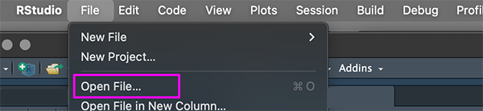
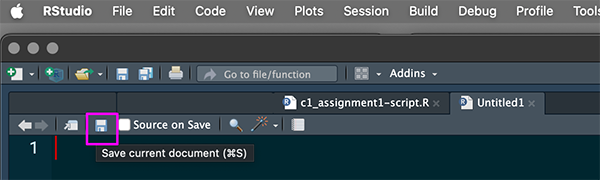

Class 1 Assignment: Creating an Urban Dataset - from primary observations to R data frame
Fall 2025 | Instructor: Stephen Metts | PGUD 5160 - CRN 2247
Preamble
In this first week’s assignment, we will utilize the framework from Class 1 lab steps to develop a data frame that captures your unique interests in New York’s urban space - the very neighborhood around you. Follow the sequence of steps below to first orient to this week’s content: lecture, materials and weekly reading(s). Once complete, move along to creating your own data frame, making sure to upload the assignment deliverable, due Thursday, September 4th, 2025 at 11:59pm.
Week 1 Class 1 Materials:
Week 1 Class 1 Reading:
We will utilize the previous title throughout the course. For this week, focus only on the following definitions listed alphabetically both here and in the book:
- analogue data
- autographic data
- categorisation and classification
- data
- data dictionary
- data entry
- Data Science
- data walks
- information
- metadata
- mundane data
- observation
- primary data
- raw data
- secondary data
At 7am Friday, September 5th, the first weekly quiz will open in Canvas. Utilize the posted Class 2 Agenda to gain the quiz access code which will be posted towards the beginning of the agenda. Expect 10 questions in total that cover the concept definitions listed above.
Class 1 Assignment:
Step 1: Review resources and examples
In this first assignment, we will transform everyday observations about the urban space(s) around you into an organized dataset for R: a valid R data frame. As we all experience and know, a urban environment like New York City is extremely dynamic and ever-changing. However, the physical environment can be observed and cataloged; and this can occur in very unique ways. In the following three example prompts, think about the priority of each platform and how each offers unique insight into urban space in a systematic way.
- Example Prompt 1 - Ed Ruscha’s Sunset Strip
Ruscha’s original work, “Every Building on the Sunset Strip,” was an accordion-fold book showcasing photographs of both sides of a mile and a half stretch of Sunset Boulevard. The online archive expands upon this, offering a comprehensive and interactive way to experience his documentation of the famed Los Angeles street.
In this example, note that Ruscha deployed a deadpan, documentary approach to a complex urban environment. Across the voluminous archive, themes start to emerge, what one might call the typology of Los Angeles - at least Sunset Strip - itself.
How would you describe your immediate environment as a typology? What stands out? What elements repeat facade to facade, block to block? This can be a good approach to thinking about an item, element or street furniture worthy of transcribing into a data set.
- Example Prompt 2 - Old NYC
Unlike Ruscha’s work spanning the totality of the Sunset Strip in Los Angeles, this online interactive mapping project draws attention to specific, singular street locations offering a portal ‘back in time’ to archival photographs at the same location.
Like Old NYC, is the past readily evident in certain street locations in your immediate neighborhood? What visible clues to past decoration and uses exist in the present, building to building, parcel lot to parcel lot along the street? Considering past usage and evidence of historical dimensions can be another great approach to developing an urban data set for past, present and even future use scenarios.
- Example Prompt 3 - Open Street Map - Map Features Catalog
OpenStreetMap (OSM) represents the real world using a data model built upon three core elements: nodes, ways, and relations, enhanced by a system of descriptive tags. At its core, the mapping project represents point-like features in a database format. This is a great example of how elements in the urban environment are cataloged and transformed into a coherent database for worldwide use.
Lik OSM, consider both very familiar but also overlooked infrastructure elements in the urban environment. The OSM map features catalog is an excellent prompt to isolate and develop a particular urban element into a data set.
Step 2: Transcribe your observations into vectors, followed as a R data frame
Once you have landed upon a theme, element or phenomena that you wish to catalog and transcribe into your assignment data frame, the first step is to develop several attributes that are integral to the description of the object in an urban environment.
For the assignment example, we will use the following theme:
Catalog all ATM machines within 5 blocks of place of residence. For this element we might have the following attributes and their type:
- Street Address (
string) - Advertising Yes or No (
logical) - Enclosed (
logical) - Company Name (
character or string) - Fee Amount (
number)
In the example above, we have 5 attributes which will require us to first make 5 atomic vector statements and then combine these into a data frame in R. An example of the vectors could be the following:
sa <- c("122 2nd street", "157 3rd street", "87 4th street", "25 5th street")
advert <- c(TRUE, FALSE, TRUE, FALSE)
enclosed <- c(FALSE, TRUE, TRUE, FALSE)
name <- c("BofA", "Capital One", "Bob's Bakery", "Starbucks")
fee <- c(3.45, 4.00, 2.50, 5.00)Once complete, these 5 vectors would be combined into a final data frame using the function structure as follows:
local_ATMS <- data.frame(name = name, address = sa, advertisement = advert, inside = enclosed, fee = fee)The sucessful completion of the data frame is then followed by a print function to the console:
Step 3: Develop an R script
To complete the assignment deliverable, you will author, complete, save and upload to Canvas an R script that contains the following:
- Comments that describe the data frame theme and various attributes. Comments in R, like many programming languages, start with a
#. - A series of complete vectors representing each development vector.
- A data frame printed to the console which envelops the vectors into the data frame using the
data.frame()function. - The script itself is to be developed and uploaded to Canvas in the following naming convention and extension format:
c1_assignment1-first-name_last-name.R
In developing your data frame theme and variables, you are not limited to any type of attribute variable or number of observations. Certainly more than a 100 observations is probably too many; anywhere from 10-30 makes good sense. Conversely, if you wanted to just have several observations but a deep field of of variables, that could be interesting also.
Make sure prior to submission that you script is valid in R and that you are able to full print to the console the final data frame. Once ready for submission, make sure to submit the script with the naming convention c1_assignment1-first-name_last-name.R. Utilize the following example script to revise and adapt to your own assignment 1 specifics:
In order to open an R script, navigate to top RStuio menu File>Open File and point to the R script.

In order to save an R script, navigate to the top ribbon and find the blue disk icon Save current document and save to your assignment directory (folder), followed by an upload to Canvas. Don’t forget to back up your work both locally and remotely.

The assignment 1 submission is due to Canvas on Thursday, September 4th, 2025 at 11:59pm.